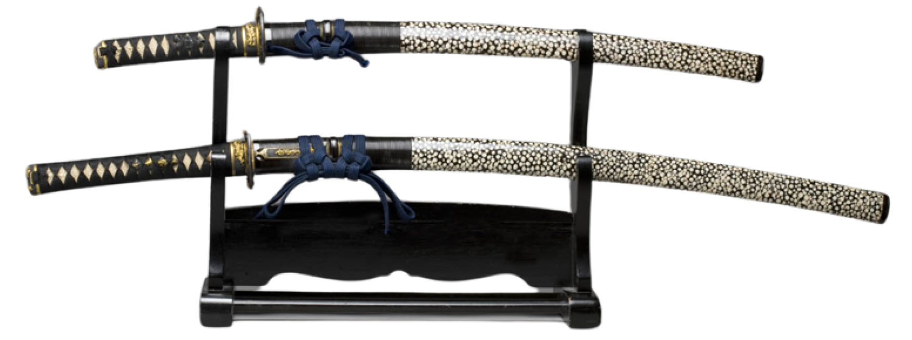

Katana: A traditional Japanese sword characterized by its distinctive appearance, featuring a curved, slender, single-edged blade with a circular or squared guard and long grip to accommodate two hands. Renowned for its exceptional sharpness and cutting ability, the katana has a rich history deeply embedded in the samurai culture of feudal Japan, symbolizing honor, craftsmanship, and martial skill.
Jian: A straight, double-edged Chinese sword with a history dating back over 2,500 years, the jian is known for its graceful and fluid movements in traditional Chinese martial arts. Its slender, lightweight design allows for swift and precise strikes, embodying the elegance and discipline of Chinese swordsmanship.
Tachi: An older style of Japanese sword predating the katana, the tachi is characterized by its gracefully curved, slender blade and long grip, often worn suspended edge-down from the wearer's belt. Historically used by samurai warriors on horseback, the tachi reflects the refined craftsmanship and martial traditions of ancient Japan.

Khanda: A traditional Indian sword with a broad, straight blade, the khanda holds significant cultural and religious importance in Sikhism, symbolizing spiritual and temporal power. Often featuring a distinctive crossguard, the khanda embodies the values of courage, justice, and devotion to the Sikh faith, historically associated with the martial spirit and sovereignty of the Sikh community.
Gurkha Kukri: A distinctive, curved Nepalese knife that serves as both a tool and a weapon, the Gurkha kukri has a rich history linked to the bravery and military prowess of the Gurkha soldiers. Known for its inwardly curved blade and unique shape, the kukri represents the resilience, resourcefulness, and martial traditions of the Nepalese Gurkha warriors, both in battle and everyday life.